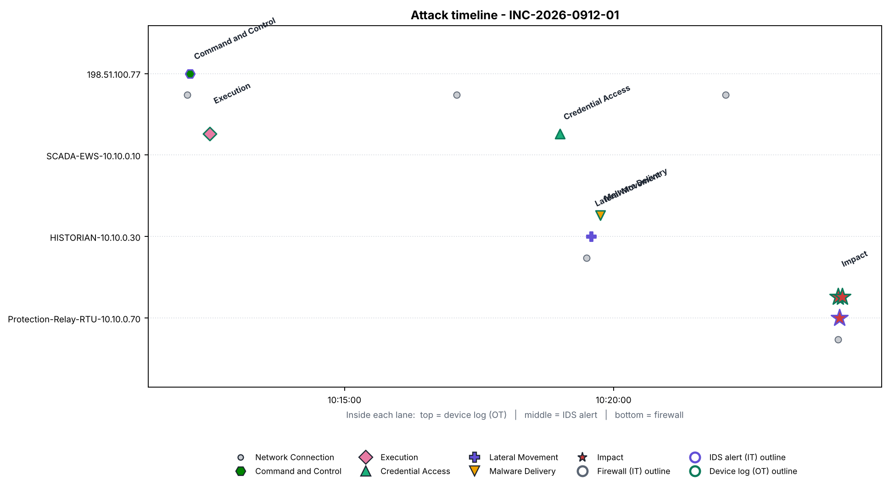
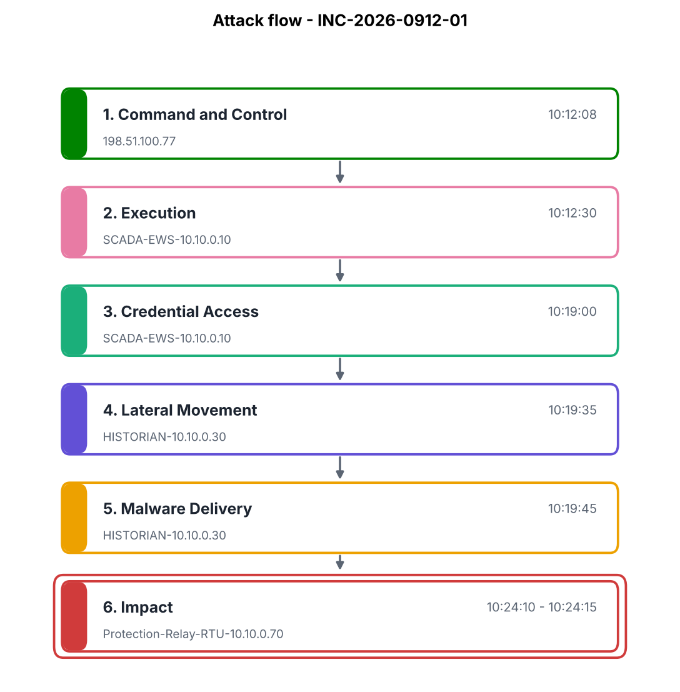
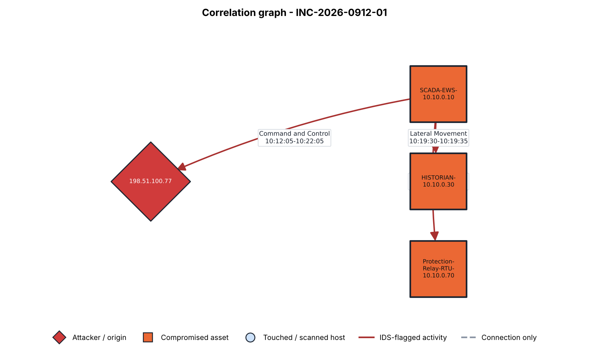

| Time | Stage | Asset | Source | Description |
|---|---|---|---|---|
| 10:12:05 | Network Connection | 198.51.100.77 | firewall | ALLOW TCP 10.10.0.10 -> 198.51.100.77:443 |
| 10:12:08 | Command and Control | 198.51.100.77 | ids | ET MALWARE Known C2 Beacon Pattern (Command-And-Control) |
| 10:12:30 | Execution | SCADA-EWS-10.10.0.10 | device | [SCADA-EWS-10.10.0.10] PROCESS_START by engineer_a: Process officehelper.exe started, outbound connection to 198.51.100.77 |
| 10:17:05 | Network Connection | 198.51.100.77 | firewall | ALLOW TCP 10.10.0.10 -> 198.51.100.77:443 |
| 10:19:00 | Credential Access | SCADA-EWS-10.10.0.10 | device | [SCADA-EWS-10.10.0.10] CRED_DUMP by engineer_a: Credential store accessed by officehelper.exe |
| 10:19:30 | Network Connection | HISTORIAN-10.10.0.30 | firewall | ALLOW TCP 10.10.0.10 -> 10.10.0.30:445 |
| 10:19:35 | Lateral Movement | HISTORIAN-10.10.0.30 | ids | ET EXPLOIT SMB Remote Service Creation Attempt (Lateral-Movement) |
| 10:19:45 | Malware Delivery | HISTORIAN-10.10.0.30 | device | [HISTORIAN-10.10.0.30] FILE_WRITE by svc_remote: Remote service created via SMB from 10.10.0.10 |
| 10:22:05 | Network Connection | 198.51.100.77 | firewall | ALLOW TCP 10.10.0.10 -> 198.51.100.77:443 |
| 10:24:10 | Network Connection | Protection-Relay-RTU-10.10.0.70 | firewall | ALLOW TCP 10.10.0.10 -> 10.10.0.70:20000 |
| 10:24:10 | Impact | Protection-Relay-RTU-10.10.0.70 | device | [Protection-Relay-RTU-10.10.0.70] SETPOINT_CHANGE by SCADA-EWS-10.10.0.10: Relay trip setpoint altered via DNP3 direct operate |
| 10:24:12 | Impact | Protection-Relay-RTU-10.10.0.70 | ids | ET SCADA DNP3 Direct Operate Anomaly - Relay Control Point (ICS-Attack) |
| 10:24:15 | Impact | Protection-Relay-RTU-10.10.0.70 | device | [Protection-Relay-RTU-10.10.0.70] STATE_CHANGE by SCADA-EWS-10.10.0.10: Protection relay output forced - risk of unplanned trip |